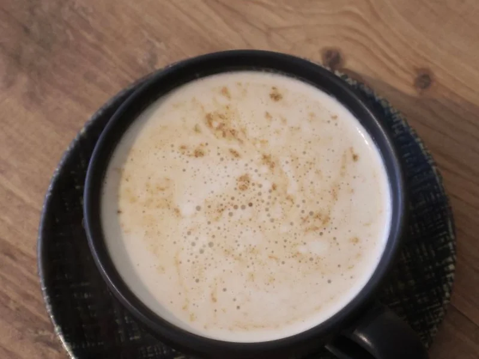
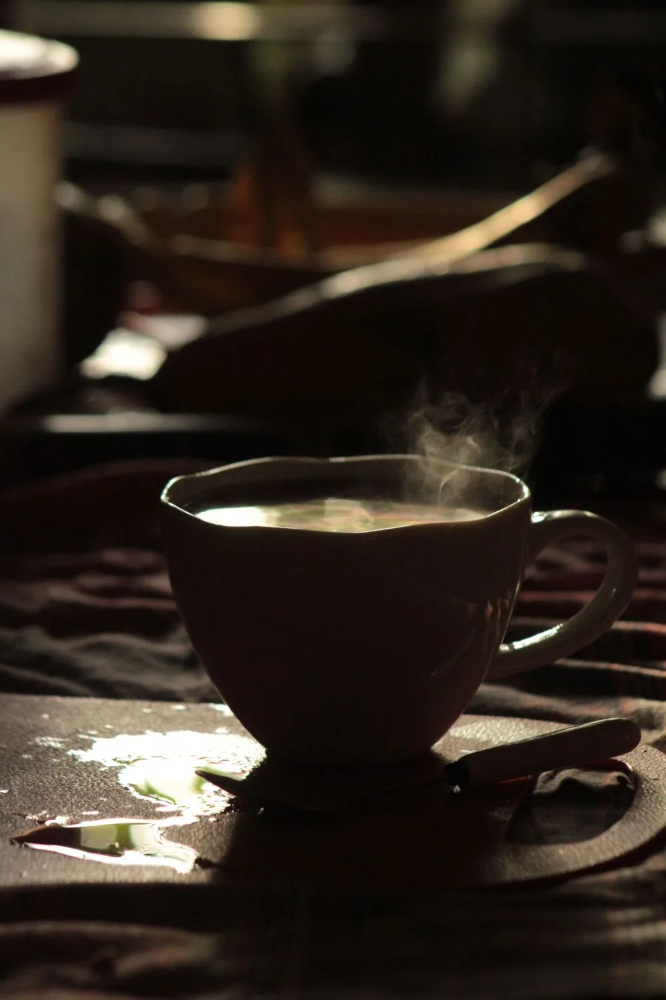
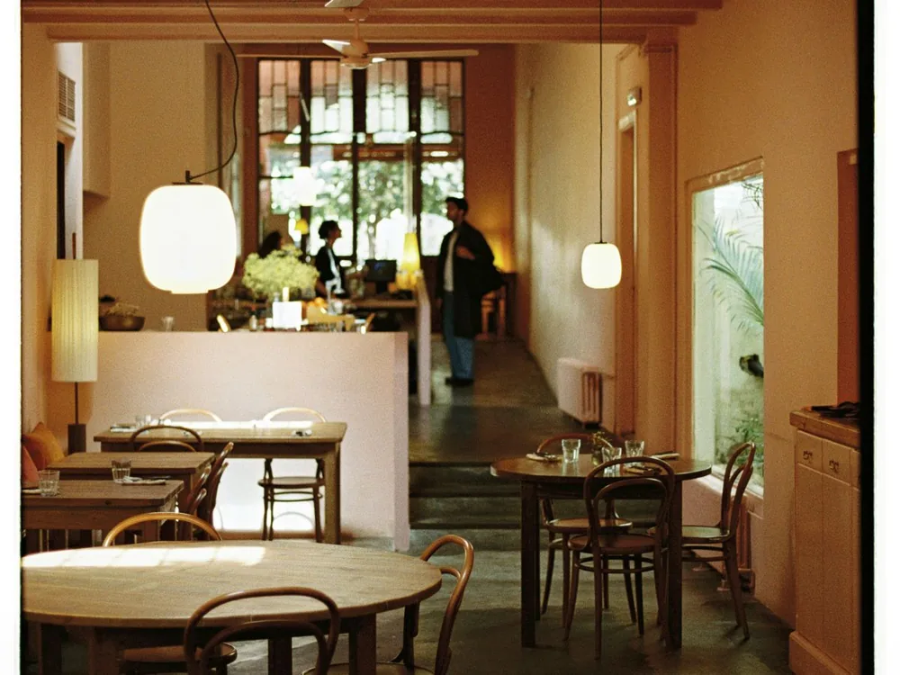

Капучино
Эспрессо, молоко и плотная пенка
- Объём
- 250 мл
- Цена
- 260 ₽
KAVA — городская кофейня с классикой и авторскими напитками


В KAVA можно забежать за эспрессо по пути на работу или остаться за чашкой капучино у окна. В меню — классика и напитки с сезонными вкусами.
Готовим кофе на зерне от местных обжарщиков.
По вашему желанию приготовим напиток на овсяном молоке.
Возьмите любимый напиток с собой на работу или прогулку.
Демонстрационные данные
Это демонстрационный сайт вымышленной кофейни KAVA. Адрес и часы работы приведены для примера.
ул. Кофейная, 7